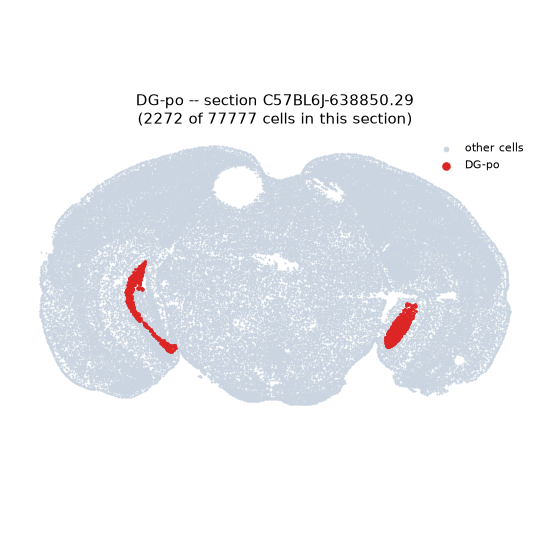
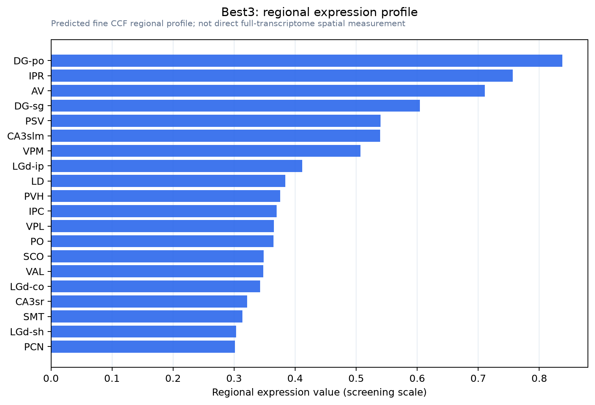

Best3
Bestrophin-3 (Vitelliform macular dystrophy 2-like protein 3)
Spatial tier: REGION_BIASED · Class: ION_CHANNEL · Top region: DG-po (Dentate gyrus, polymorph layer) · Positive regions: 37/554
45.1Discovery Score
38.3Targetability Score
CEvidence grade C
What this means: Best3: fine CCF profile is region-biased toward DG-po (top regions: DG-po, IPR, AV, DG-sg, PSV); this is a discovery lead, not direct proof.
Function in DG-po: evidence, prediction, innovation
- Gene function
- Best3 encodes bestrophin-3, a calcium-activated anion channel of the bestrophin family. Bestrophins are pentamers with a single central pore gated by intracellular calcium; in vascular smooth muscle bestrophin-3 carries the cGMP-dependent calcium-activated chloride current. The related Best1 is an established glutamate- and GABA-permeable astrocyte channel, so bestrophins can mediate gliotransmitter efflux as well as chloride flux.
- Region function
- The polymorph layer (hilus) of the dentate gyrus contains glutamatergic mossy cells and GABAergic interneurons forming the feedback loop that controls granule-cell excitability, pattern separation and seizure threshold.
- Published in this region
- none No region-specific literature found. The closest brain finding is Golubinskaya et al. 2019 (Front Physiol), who detected bestrophin-3 protein and splice variants in a nestin-positive astrocyte subpopulation of neonatal mouse brain after hypoxia-ischaemia and linked its induction to ER stress; there is no Allen mouse ISH dataset for Best3 and no hippocampal study of any kind.
- Predicted function
- Prediction: if bestrophin-3 is present in hilar astrocytes or mossy cells it would most plausibly provide a calcium-activated chloride or glutamate/GABA-permeable conductance stabilising membrane potential and contributing to tonic inhibition of granule cells, by analogy with Best1 in hippocampal astrocytes. Hilar Best3 deletion is predicted to reduce tonic GABA current, lower seizure threshold and degrade pattern separation.
- Innovation
- ★★★★★ 5/5 Bestrophin-3 has never been studied in hippocampus, yet the hilus is a seizure-critical microcircuit with mature Cre and AAV tools.
- Tools
- Best3 knockdown reagents and anti-bestrophin-3 antibodies from the vascular field (Matchkov 2008; Golubinskaya 2019); non-selective bestrophin blockers NPPB and niflumic acid; hilar access via Drd2-Cre or Calcr-Cre mossy-cell lines and GFAP/Aldh1l1 astrocyte drivers.
- References
Direct evidence located at the region
No Allen ISH section could be located at this region's centroid for the recorded experiments.
Look it up yourself: Allen Mouse Brain ISH for Best3Allen reference atlas: DG-po (structure 10704)ABC Atlas MERFISH viewer(in the ABC Atlas choose dataset MERFISH-C57BL6J-638850-CCF, colour cells by gene "Best3" or by parcellation_substructure "DG-po")All genes confined to DG-po + 3-D brain
Direct spatial evidence
MERFISH REGION LOCATOR

Regional expression figure

Predicted WMB × fine-CCF profile; not direct full-transcriptome spatial measurement.
Spatial profile
Evidence and specificity
- Evidence status
- PREDICTED_FINE
- Direct sources
- None; predicted localization only
- Exclusive threshold
- 12 positive regions out of 554
- Spatial specificity
- 0.319
- Top-region fraction
- 0.050
- Filter status
- PASS
Interpretation limits
- Cell-type-to-region projection is imputed expression, not direct spatial measurement.
- Adult reference atlases do not establish stability across age, sex, strain, state, or disease.
- Transcript abundance does not guarantee protein abundance or genetic-tool performance.